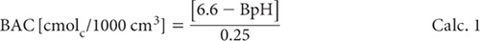
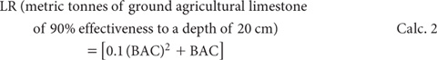

Mehlich’s single buffer pH method for LR was primarily calibrated against exchangeable acidity (unbuffered salt extract) with special reference to exchangeable Al3+. In addition, the buffer pH acidity was standardised against crop response to liming under greenhouse and field conditions (Mehlich 1976).
Table 16.2. Prediction of field lime requirements from soil -buffer pH values, based on relationships developed by Aitken et al. (1995).
Mehlich soil -buffer pH |
Lime requirement (t/ha 10 cm) |
|
to pHw 5.5 |
to pHw 6.5 |
|
4.5 |
8.6 |
18 |
5.0 |
5.0 |
11 |
5.5 |
2.2 |
5.7 |
6.0 |
0.5 |
2.3 |
6.5 |
<0.5 |
0.5 |
The main objective of this procedure for LR is to determine the quantity of CaCO3 needed to neutralise a portion or all of the exchangeable acidity for optimum plant growth. This quantity is expressed by a curvilinear function of BAC for mineral soils.
The method also includes a measurement of soil pH (water), using a 1:1 soil/water ratio (on a volume basis) for reasons given by Mehlich (1976). The Mehlich single buffer method has been found (Aitken et al. 1989; 1995) to be well correlated in laboratory incubation and field studies involving amounts of CaCO3 required to lessen the acidity of surface soils from eastern Queensland to pHw 5.5 and pHw 6.5. Table 16.2 provides examples from field-based studies.
Sodium Glycerophosphate [Na2C3H5(OH)2PO4.5½ H2O]
Laboratory-grade chemical is satisfactory, and is much more economical than the purer crystalline beta form.
Buffer Solutions pH 4.0 and pH 7.0
As for Method 4A1.
1:1 Aqueous TEA Solution
Add 50 mL triethanolamine [N(CH2CH2OH)3; s.g. 1.117–1.125 g/mL] to a 100 mL volumetric flask. Make to volume with deionised water.
Checking Solution for Mehlich Buffer
{AlCl3 – HCl mixture [0.0167 M AlCl3.6H2O + 0.05 M HCl]}
Dissolve 4.024 g aluminium chloride (AlCl3.6H2O) in 0.05 M HCl in a 1 L volumetric flask. Make to volume with 0.05 M HCl.
Mehlich Buffer Solution
To ≈750 mL of deionised water in a 1 L volumetric flask add 2.5 mL glacial acetic acid (CH3COOH) and 9 mL of 1:1 aqueous TEA Solution. Add 43 g ammonium chloride (NH4Cl) and 20 g barium chloride (BaCl2.2H2O) and dissolve. Separately dissolve 18 g sodium glycerophosphate [Na2C3H5(OH)2PO4.5½H2O] in 200 mL of deionised water and transfer to the 1 L flask. Allow solution to reach room temperature, following the endothermic reaction, and make to volume with deionised water: mix thoroughly.
Dilute an aliquot of the buffer solution with an equal volume of deionised water and determine pH. The pH of the buffer reagent should be 6.6. If it is above pH 6.64, add (drop wise) glacial CH3COOH; if below pH 6.56, add (drop wise) 1:1 aqueous TEA Solution to bring buffer solution to pH 6.6.
Check concentration of buffer by adding 10 mL AlCl3 – HCl Checking Solution to 10 mL buffer plus 10 mL deionised water, and determine pH. The pH should be 4.1 ± 0.05.
Before measuring buffer pH (BpH) of soil suspension, calibrate pH meter using buffers pH 4.0 and pH 7.0 and/or in accord with manufacturer’s instructions. Check Mehlich Buffer Solution (20 mL buffer plus 20 mL deionised water) is pH 6.6, then proceed.
Take a 20 cm3 scoop (see Note 1) of air-dry mineral soil (<2 mm) and place in a 100 mL beaker. Add 20 mL deionised water and stir well. After about 30 min, read soil pH while stirring, and record result as pH water (pHw1:1). Then add 20 mL Mehlich Buffer Solution, stir thoroughly and after 60 min read pH (BpH) to the nearest 0.05 unit, while stirring. If it is desired to extend buffer capacity below pH 4.0, add an additional 20 mL of Mehlich buffer solution, equilibrate with stirring, and measure BpH after 60 min.
(a) For a single 20 mL aliquot of Mehlich buffer solution, convert buffer pH (BpH) into buffer pH acidity (BAC) as follows:

If an additional 20 mL portion of Mehlich Buffer Solution was used, multiply BAC from Calc. 1 by 2.
(b) For LR of mineral soils when plants are known to have a moderate tolerance of acidity, and soil pHw1:1 is <6.5, use the following relationship:

(c) For LR of mineral soils when plants are known to have low tolerance of acidity, and soil pHw1:1 is <6.5, multiply LR from Calc. 2 by 1.5.
Report Mehlich Lime Requirement (t/ha 20 cm), noting the basis on which the estimate was made.
1. Use a volumetric scoop of 20 cm3 capacity, made of stainless steel, brass or plastic.
2. For peaty and other soils of high (>20%) OM content, other relationships to derive LR must be used. See Mehlich (1976) and Anon (1980) for details.
3. In all cases when soil pHw1:1 is below the indicated optimum, Mehlich (1976) suggests that 1.0 t/ha 20 cm of lime (or equivalent) should be applied, even though BAC is <0.5 cmolc/1000 cm3.